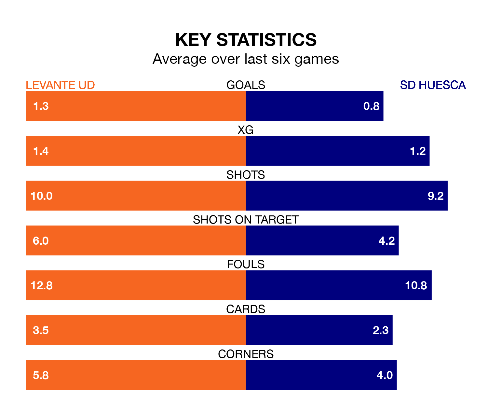

Struggling SD Huesca face Levante UD away at the Estadio Ciudad de Valencia on Sunday looking to build on a win in their last league outing.
After securing all three points with a 1-0 victory over Racing Club de Ferrol on December 10, SD Huesca sit 19th in the Segunda División.
They travel to play a Levante side 10th in the standings, who were held in their last match, 0-0 against Sporting Gijón, on December 9.
In the last 10 years, Levante and Huesca have played each other on eight occasions. Levante won one of them, Huesca three, and they drew four times.
On average, Levante UD scored 1.0 goal and SD Huesca 1.5 in those matches.
Their last meeting was on March 4, when Huesca won 3-0 at home.
With 12 goals in 19 games so far this season, Huesca are the league's lowest scorers with 0.6 goals per game. But they are conceding fewer than average too, letting in 16 goals at a rate of 0.8 per game.
Levante, meanwhile, are average scorers, with 1.2 goals per game. They have also conceded 1.2 goals per game.
Levante UD are in disappointing form in the Segunda División, with one win and two draws from their last six games.
With three wins and a draw over that period, SD Huesca's form is better – they have taken 10 points from 18, compared to the home team's five.
With Andrés Fernández between the sticks, Levante can rely on one of the league's safest pair of hands. He has kept seven clean sheets in his 11 appearances this season in the Segunda División.
In the visitors' net, Álvaro Fernández has six clean sheets in 19 games. He has conceded a goal every 122 minutes, 40% more often than the 165 minutes between goals for Fernández Moreno.
